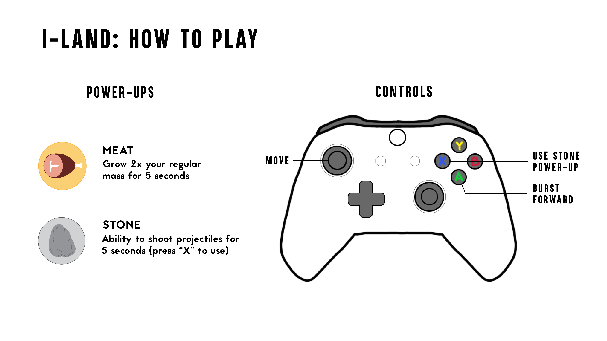
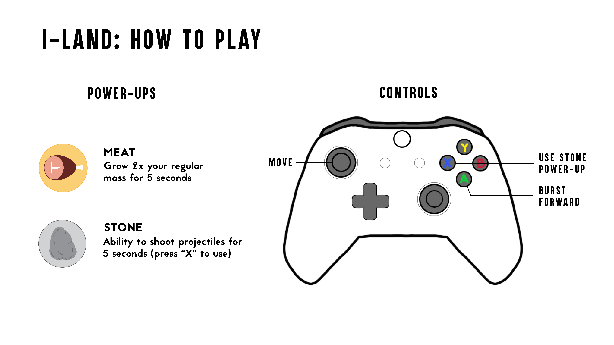
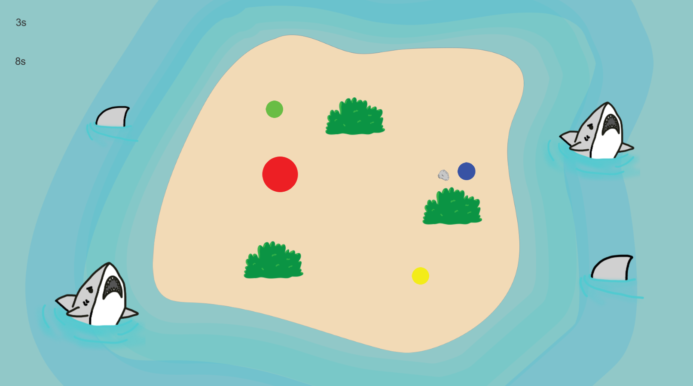
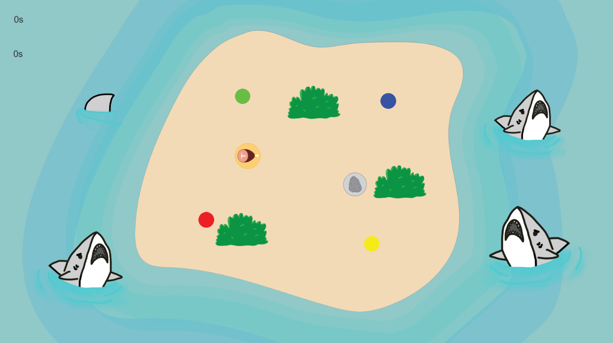

Building Process
After the game concepts and environment design were solidified, I began programming the game with another teammate in order to finish the entire game on time.
 

The final result of the game was quite successful in terms of the enjoyment and fun. The feedback during the final showcase was positive and people had a lot of fun playing with friends. If we were to have more time, the team was thinking of making the game a bit more out of the ordinary, introducing physics and aesthetics that would stay around the same premise of our current game but instead alter the mechanics such as the power-ups to give a new experience for the player.

